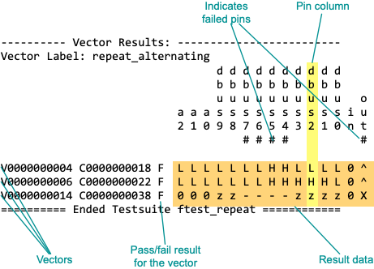
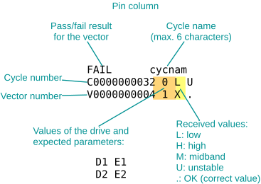

FFV output control settings
On the FFV (first failing vectors) tab in the Log first _ cycles entry field (see Settings on the FFV tab), you can enter the number of cycles for which you want data to be logged.
The Verbose Mode checkbox switches between short and detailed (verbose) mode for the presentation of vector result data.
The following example shows a typical Vector Result Section in short mode.
---------- Vector Results: ----------------------------------
Vector Label: repeat_alternating
d
bdddddddddd
ubbbbbbbbbb
DDDDDDDDD\\ suuuuuuuuuu o
AAAAAAAAQQQQQQQQQCWaaa1ssssssssssiu
98743210987654321EE21009876543210nt
#### #
V0000000000 C0000000010 F 0000000000010000000LLLLLLLLHHHHHH0^
V0000000002 C0000000014 F 00000000000Z0000000LLLLLHHLHHHHHH0^
V0000000004 C0000000018 F 0000000000010000000LLLLLLLLHHLLLL0^
V0000000006 C0000000022 F 0000000000000000000LLLLLLLLHHHHHL0^
V0000000014 C0000000038 F 0000000000010000Z00000zzz----zzzz0X
The figure below explains how result data is organized in the Vector Results section.

The following translation table explains which driven, received, and expected data for a pin leads to which result data in the Vector Results Section. To print this table to the lower text panel of the report window, choose Char. Translation from the Help menu. (See Report window menus.)
=================================================== Drive data: 0 = drive low 1 = drive high z = tri-state, driver low Z = tri-state, driver high --------------------------------------------------- Expected data + Received data (verbose mode): L = compare low H = compare high M = compare midband/intermediate U = compare unstable X = mask compare ? = reconstruction not possible WL = window compare low WH = window compare high WM = window compare midband/intermediate WU = window compare unstable WX = mask window compare WF = reconstruction not possible # = unspecified received instead of expected data (error) . = received as expected (no error) --------------------------------------------------- Failed data (short mode): v = low received instead of expected data ^ = high received instead of expected data - = midband received instead of expected data ~ = unstable received instead of expected data # = unspecified received instead of expected data ===================================================
In verbose mode, the vector results section in the report contains more detailed information than in short mode.
The following example shows the same results as in the example above, but now in verbose mode and for failed pins only.
-------------- Vector Results: ------------------------
Vector Label: repeat_alternating_with_hard_errors
d d d d
b b b b
u u u u o
s s s s u
7 6 5 4 t
# # # # #
FAIL dvcstddvcstddvcstddvcstddvcstd
C0000000000 0 L . 0 L . 1 H . 1 H . . L H
V0000000000 . . . . . . . . . . . . . . .
FAIL dvcstddvcstddvcstddvcstddvcstd
C0000000002 1 H . 0 L . 1 H . 1 H . . L H
V0000000002 . . . . . . . . . . . . . . .
FAIL dvcstddvcstddvcstddvcstddvcstd
C0000000004 0 L . 0 L . 1 H . 1 H . . L H
V0000000004 . . . . . . . . . . . . . . .
FAIL dvcstddvcstddvcstddvcstddvcstd
C0000000006 0 L . 0 L . 1 H . 1 H . . L H
V0000000006 . . . . . . . . . . . . . . .
FAIL dvcstddvcstddvcstddvcstddvcstd
C0000100011 z L M z L M z L M z L M . X .
V0000000014 . . . . . . . . . . . . . . .
The figure below shows how result data is organized in the vector results section in verbose mode.

Functional changes
- Introduced before SmarTest 6.3.2